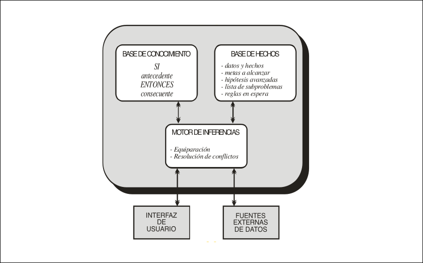
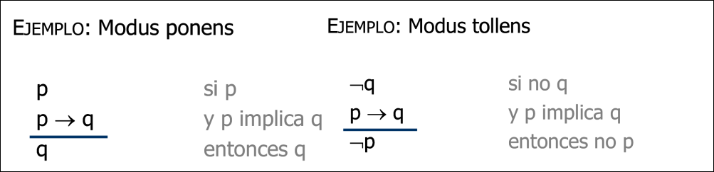

IA · curso 3
3. Sistemas Basados en Conocimiento
3.1 Introducción y Definición
A diferencia de los sistemas de "búsqueda en espacio de estados" (vistos anteriormente), donde se busca una solución explorando estados ciegamente o con heurísticas, los SBC se basan en conocimiento explícito para razonar.
Diferencias Clave: Búsqueda vs. Conocimiento.
| Característica | Búsqueda en Espacios de Estados | Sistemas Basados en Conocimiento |
|---|---|---|
| Base | Estados y operadores | Base de Conocimiento (Reglas/Lógica) |
| Método | Algoritmo de búsqueda (exploración) | Método de razonamiento (inferencia) |
| Datos Iniciales | Estado inicial | Hechos conocidos |
| Resultado | Camino o estado solución | Respuesta a una consulta / Diagnóstico |
3.2 Sistemas Expertos (SE)
Son el tipo más representativo de SBC. Se definen como sistemas con un nivel de competencia equivalente o superior a un experto humano en un dominio concreto.
¿Cuándo usar un Sistema Experto? No sirven para todo. Se recomiendan cuando:
- El problema es complejo y de un dominio especializado.
- No existe un algoritmo tradicional para resolverlo.
- Existen expertos humanos capaces de articular ese conocimiento.
Historia y Ejemplos
- Dendral (1965): Identificación de compuestos químicos.
- Mycin (años 70): Diagnóstico de infecciones bacterianas.
3.3 Arquitectura de un Sistema Experto
Para que una máquina "razone", necesita separar lo que sabe (conocimiento) de lo que está pasando (hechos) y de cómo pensar (motor).
Componentes Principales:
- Base de Conocimiento (BC): Es estática y general del dominio. Contiene las reglas ("Si X entonces Y").
- Base de Hechos (BH): Es dinámica y específica del caso actual. Contiene los datos del problema y lo que se va descubriendo.
- Motor de Inferencia: Es el "cerebro". Aplica el conocimiento a los hechos para deducir nuevas verdades. Realiza tareas de equiparación (matching) y resolución de conflictos.

| Hechos | Conocimiento |
|---|---|
| Específicos, relacionados con el problema concreto que se intenta resolver. | General, relacionado con el dominio en el que se opera y el tipo de problemas. |
| Dinámicos, a partir de unos hechos iniciales pueden aparecer otros distintos. | Relativamente estático, aunque puede cambiar si se añade nuevo conocimiento. |
| Aumenta durante la resolución del problema. | Normalmente no aumenta durante la resolución del problema. |
| Necesidad de almacenamiento y recuperación eficiente. | Necesidad de razonamiento eficiente. |
| Se busca que los hechos obtenidos directamente del problema sean precisos y exactos. | Puede ser impreciso e incierto; por lo tanto, también los hechos inferidos pueden serlo. |
3.4 Representación del Conocimiento
¿Cómo guardamos el conocimiento en la máquina?
Lógica Formal (La base matemática)
Es la forma más rigurosa de representar relaciones.
- Lógica Proposicional: Usa afirmaciones verdaderas/falsas y operadores (AND, OR, NOT, Implicación). Se basa en reglas de inferencia.Imagina siempre una regla condicional:
("Si pasa P, entonces pasa Q"): - Modus Ponens: Si la regla es cierta (
) y la condición ( ) se cumple, entonces la consecuencia ( ) también es cierta. - Modus Tollens. Si la regla es cierta (
), pero vemos que la consecuencia ( ) NO ha ocurrido, entonces la causa ( ) tampoco pudo ocurrir.
- Modus Ponens: Si la regla es cierta (

- Lógica de Predicados:
-
Objetos (Constantes): Las cosas del mundo real (ej:
Juan,Ana,Coche). -
Predicados: Son las propiedades o relaciones que afectan a los objetos. Se escriben como funciones:
es_hombre(Juan)Predicado de propiedad. es_hermano(Juan, Ana)Predicado de relación.
-
Variables: Usamos letras (
) para referirnos a "cualquier cosa" sin especificar quién. -
Cuantificadores: Las herramientas poderosas:
- Universal (
- "Para todo"): Permite crear reglas generales. - Ejemplo:
(Si es humano es mortal).
- Ejemplo:
- Existencial (
- "Existe"): Indica que hay al menos uno. - Ejemplo:
(Padre( , Juan)) "Existe alguien que es el padre de Juan".
- Ejemplo:
- Universal (
-
Reglas de Producción y Sistemas Basados en Reglas (SBR)
Es la estructura más utilizada en los Sistemas Expertos. Cuando representamos el conocimiento de esta forma, hablamos de Sistemas Basados en Reglas.
-
Unidad básica: La Regla de Producción.
- Formato:
SI <condición/situación> ENTONCES <acción>.
- Formato:
-
Dinámica del SBR:
-
La parte
SIbusca coincidencias en la Base de Hechos. -
La parte
ENTONCESmodifica la memoria: añade nuevos hechos, borra antiguos o ejecuta acciones .
-
-
Ejemplo:
- Regla: SI "coche no arranca" Y "batería < 10V" ENTONCES "cambiar batería".
Redes Semánticas
Representación gráfica mediante grafos.
-
Nodos = Conceptos/Objetos (ej. "Juan", "Persona").
-
Arcos = Relaciones o herencia (ej. "es un", "tipo de"). Permite heredar propiedades (si Juan es Persona, y Persona tiene altura, Juan tiene altura).
3.5 Estrategias de Razonamiento (El Motor en acción)
Una vez tenemos reglas y hechos, ¿cómo los procesa el motor? Existen dos estrategias opuestas:
Encadenamiento Hacia Adelante (Forward Chaining)
-
Filosofía: Guiado por los datos (Data-driven).
-
Proceso: Partimos de los hechos conocidos
buscamos reglas que se cumplan ejecutamos acciones (disparamos reglas) obtenemos nuevos hechos hasta llegar a un objetivo o no poder seguir . -
Ejemplo (Coches): Sé que "el coche no arranca" y "batería < 10V"
Deduzco "cambiar batería". -
Algoritmo: Ciclo de Equiparar (ver qué reglas se cumplen)
Resolver (elegir una del conjunto conflicto) Aplicar (ejecutarla).
El conjunto conflicto es el grupo de reglas que, en un momento determinado del razonamiento, cumplen todas sus condiciones (antecedentes) en base a los hechos disponibles y aún no fueron ejecutadas.
Es decir, no es una sola regla, sino la colección de todas las reglas posibles que el sistema podría ejecutar en ese instante porque sus requisitos ("SI...") son ciertos.
El principio de refracción evita la aplicación reiterada de una regla aplicable. Imagina que no existiera este principio. Tienes la siguiente situación:
- Hecho:
(temperatura 40) - Regla:
SI temperatura > 38 ENTONCES imprime "Tiene Fiebre"
¿Qué pasaría sin refracción?
- Ciclo 1: El motor ve que la temperatura es 40. Se cumple la regla. Acción: Imprime "Tiene Fiebre".
- Ciclo 2: El motor vuelve a mirar los hechos. La temperatura sigue siendo 40 (nadie la ha borrado). La regla se cumple de nuevo. Acción: Imprime "Tiene Fiebre".
- Ciclo 3: La temperatura sigue siendo 40... Acción: Imprime "Tiene Fiebre".
El sistema entraría en un bucle infinito, repitiendo la misma acción una y otra vez, porque la condición sigue siendo verdad. Para que no pase, el motor de inferencia dice: "Vale, esta regla se cumple con el dato (temperatura 40), PERO yo ya ejecuté esta regla exacta con este dato exacto en el ciclo anterior. Así que no la voy a volver a meter en el conjunto conflicto hasta que los datos cambien."
Encadenamiento Hacia Atrás (Backward Chaining)
-
Filosofía: Guiado por los objetivos (Goal-driven).
-
Proceso: Partimos de una hipótesis (¿Tiene gripe?)
buscamos reglas que concluyan eso verificamos si se cumplen sus premisas (antecedentes). -
Estructura: Se suele modelar como un Grafo AND/OR. Para probar una meta, debo probar sus sub-metas.
-
Ejemplo (Médico): ¿Tiene infección? (Meta)
Para ello necesito saber si tiene fiebre y dolor (Sub-metas) Verifico temperatura.
3.6 Comparativa: SE vs. Programación Convencional
Es fundamental entender que programar un Sistema Experto no es programar un algoritmo clásico.
| Programación Convencional | Sistemas Expertos |
|---|---|
| Imperativa (Cómo hacerlo) | Declarativa (Qué se sabe) |
| Modificación por re-programación de código | Modificación añadiendo/quitando reglas en la base de conocimiento |
| Solución algorítmica (precisa, única) | Solución inferida (puede ser incierta/probabilística) |
| Guiada por flujo de control | Guiada por el Motor de Inferencia |
Tendencias Modernas: LLMs y "Chain of Thought":
-
Los Grandes Modelos de Lenguaje (LLMs) pueden realizar razonamientos lógicos (silogismos), aunque a veces fallan si las premisas del mundo real entran en conflicto con la lógica formal (ej. "todos los pájaros vuelan" vs "pingüinos").
-
Chain-of-Thought (CoT): Técnica de prompting donde se pide al modelo que "piense paso a paso". Esto mejora drásticamente la capacidad de resolver problemas matemáticos o lógicos complejos en comparación con pedir solo la respuesta final.
3.7 CLIPS (C Language Integrated Production System)
¿Qué es CLIPS?
Es una herramienta de software diseñada para desarrollar Sistemas Expertos y sistemas basados en reglas. Funciona mediante un paradigma de programación declarativa: tú dices qué sabes (hechos) y qué hacer si ocurren ciertas cosas (reglas), y el motor decide cuándo hacerlo.
Los 3 Pilares de la Memoria
Debes distinguir claramente entre estos tres espacios:
-
Base de Conocimiento (Knowledge Base): Es donde se almacena la "inteligencia" estática del programa. Aquí viven las Reglas (
defrule), las Plantillas (deftemplate) y las definiciones de hechos iniciales (deffacts).- Se llena usando: El comando
(load).
- Se llena usando: El comando
-
Memoria de Trabajo (Working Memory): Es la "pizarra" volátil donde están los datos actuales (los Hechos). Cambia constantemente.
- Se llena usando: Los comandos
(reset)y(assert).
- Se llena usando: Los comandos
-
Motor de Inferencia: El "cerebro" que compara constantemente la Memoria de Trabajo con la Base de Conocimiento para ver qué reglas activar.
Los Hechos (Datos)
1. Tipos de Hechos
- Vectores Ordenados: Listas simples.
(Pedro 45 V). Rígidos. - Plantillas (Deftemplates): Estructurados con campos.
(Persona (Nombre Juan) (Edad 30)). Flexibles.
2. Propiedades Críticas para el Examen (IMPORTANTE)
a) El Hecho Especial f-0 (initial-fact)
- ¿Qué es? Es el "hecho cero". El primer dato que CLIPS crea automáticamente cuando reinicias el sistema.
- ¿Para qué sirve? Actúa como una chispa de arranque. Permite que se disparen reglas que no tienen condiciones específicas en su parte izquierda (reglas que quieres que se ejecuten "siempre" al principio).
- Prohibición: El usuario NO puede definir ni manipular el hecho f-0. Está reservado. Si intentas hacer
(assert (f-0 ...))o borrarlo manualmente sin cuidado, el sistema puede fallar o ignorarte.
b) Unicidad (Conjuntos)
- La memoria de CLIPS es un conjunto matemático, no una lista.
- No hay duplicados: Si intentas añadir un hecho idéntico a uno que ya existe (mismos campos, mismos valores), CLIPS no hace nada. No crea un duplicado ni genera un nuevo ID. Simplemente mantiene el viejo.
El Ciclo de Vida: De Cargar a Ejecutar
Aquí es donde suelen pillar en las preguntas tipo test (como la pregunta 14 de tu imagen). El orden lógico es:
1. (clear): El Borrado Total
- Acción: Elimina TODO. Deja el sistema vacío, como recién instalado.
- Efecto: Borra hechos, reglas, templates y deffacts.
2. (load "archivo.clp"): La Carga
- Acción: Lee un archivo de texto
.clplínea por línea. - Efecto (OJO):
- Carga las definiciones (
defrule,deftemplate,deffacts) en la Base de Conocimiento. - NO ejecuta nada.
- NO mete hechos en la Memoria de Trabajo (a menos que haya
assertssueltos fuera de reglas, lo cual es mala práctica). - Los hechos definidos en
deffactsse quedan "en espera", memorizados, pero aún no activos.
- Carga las definiciones (
3. (reset): El Reinicio y Preparación
Este comando es el puente entre la teoría (lo cargado) y la práctica (la memoria). Realiza 3 pasos estrictos:
- Borra todos los hechos actuales de la Memoria de Trabajo (
retract *). - Crea automáticamente el hecho
f-0(initial-fact). - Activa todos los hechos que estaban definidos en los
deffactsque cargaste previamente conload, metiéndolos ahora sí en la Memoria de Trabajo.
4. (run): La Ejecución
- Acción: Arranca el Motor de Inferencia.
- Efecto: El motor mira los hechos que
resetacaba de poner, busca reglas que coincidan (Pattern Matching), las mete en la Agenda y las ejecuta hasta que no queden más
La Agenda y el Orden de Ejecución (MUY IMPORTANTE)
La Agenda es la lista de tareas pendientes del sistema.
¿Qué hay dentro de la Agenda?
No contiene solo reglas, ni solo hechos. Contiene Activaciones (Instancias).
- Definición de Activación: Es la pareja formada por:
- Ejemplo: Si tienes la regla "Si tienes hambre, come" y el hecho "tengo hambre", en la agenda aparece:
Activación: Regla_Comer + Hecho_f-1.
¿Cómo decide CLIPS qué ejecutar primero? (Resolución de Conflictos)
Si hay varias reglas en la agenda (Conjunto Conflicto), CLIPS tiene que elegir una. El orden por defecto suele ser Salience + LIFO (Depth Strategy).
A. Salience (Prioridad Explícita)
- Puedes dar "rangos militares" a las reglas.
(declare (salience 100)): Esta regla es VIP. Se ejecutará antes que una de salience 0.- Rango: de -10,000 a +10,000.
B. Recency (Recencia - LIFO)
- Si dos reglas tienen la misma prioridad (salience), ¿cuál va primero?
- Regla de oro: CLIPS favorece a los hechos más recientes.
- Comportamiento de Pila (Stack): El último hecho que entró (
assert) es el primero que dispara reglas. Esto permite que el sistema se centre en "lo último que ha pasado" antes de volver a tareas antiguas.
3. Casos que se pueden dar en la Agenda
Caso 1: Agenda Vacía
- Si haces
(run)y no hay activaciones, el programa termina inmediatamente. No hace nada.
Caso 2: Una regla coincide con varios hechos distintos
- Imagina la regla:
Si (número ?n) => imprimir ?n. - Hechos:
(número 1)y(número 2). - Resultado: En la agenda habrá dos activaciones distintas de la misma regla. La regla se ejecutará dos veces (una para el 1 y otra para el 2).
Caso 3: Principio de Refracción (Loop Prevention)
- Pregunta de examen: ¿Se ejecuta una regla infinitamente si el hecho sigue ahí?
- Respuesta: NO. CLIPS recuerda que ya ejecutó la regla
R1con el hechof-1. Aunquef-1siga existiendo, esa activación específica se borra de la agenda para no repetirse eternamente. Solo se volverá a activar si modificas el hecho (porque al modificarlo cambia su ID o su "timestamp").
Ejemplo Práctico de Traza
Imagina que tienes este archivo enfermedades.clp:
Fragmento de código
; DEFINICIÓN DE DATOS INICIALES (La lista de la compra)
(deffacts mis-datos
(temperatura 40)
(garganta_inflamada)
)
; REGLA
(defrule detectar-fiebre
(temperatura ?t&:(> ?t 38))
=>
(printout t "Tienes fiebre" crLF)
)
Secuencia de Comandos:
- (load "enfermedades.clp"):
- CLIPS lee el archivo. Memoriza que existe una regla
detectar-fiebrey un grupo de datosmis-datos. - Estado Memoria Trabajo: VACÍA. (Ni siquiera f-0).
- CLIPS lee el archivo. Memoriza que existe una regla
- (reset):
- Paso 1: Borra lo que hubiera (no borra reglas)
- Paso 2: Crea
f-0 (initial-fact). - Paso 3: Lee el
deffacts mis-datosy hace assert def-1 (temperatura 40)yf-2 (garganta_inflamada). - Estado Memoria Trabajo:
f-0, f-1, f-2.
- (run):
- El motor ve
f-1 (temperatura 40). - La regla
detectar-fiebrese activa (porque 40 > 38). - Sale por pantalla: "Tienes fiebre".
- El motor ve